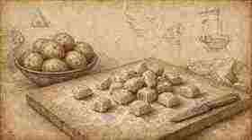
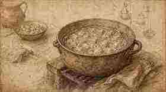
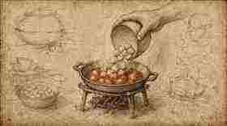
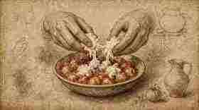
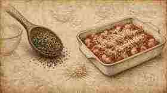
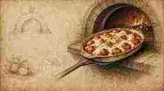

01
Tagliare gli gnocchi a pezzetti.
Cut the gnocchi into pieces.

Ratanà · Ricetta III · Tutorial
Ratanà · Recipe III · Tutorial
Gnocchi delicati al forno con sughetto, mozzarella di bufala e pesto — struttura Fooby, tavole illustrate in stile Leonardo come i tutorial Italia Squisita.
Delicate baked gnocchi with tomato sauce, buffalo mozzarella and pesto — Fooby structure, Leonardo-style illustrated plates like the Italia Squisita tutorials.
← Scheda del quaderno ← Notebook cardTagliare gli gnocchi a pezzetti.
Cut the gnocchi into pieces.

Cuocere in acqua bollente senza romperli; quando vengono a galla, circa 5 minuti.
Cook in boiling water without breaking them; when they float, about 5 minutes.

Padellino o teglia col sugo.
A small pan or baking dish with the sauce.

Mozzarella spezzata a mano.
Mozzarella torn by hand.

Pesto e formaggio.
Pesto and cheese.

Forno a 140 °C per 20 minuti.
Oven at 140 °C for 20 minutes.
